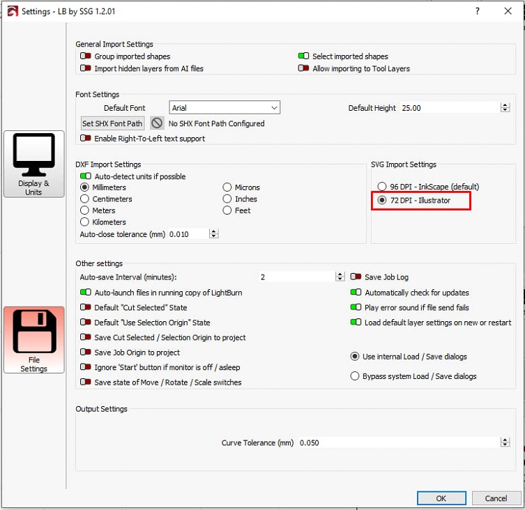
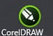
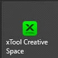
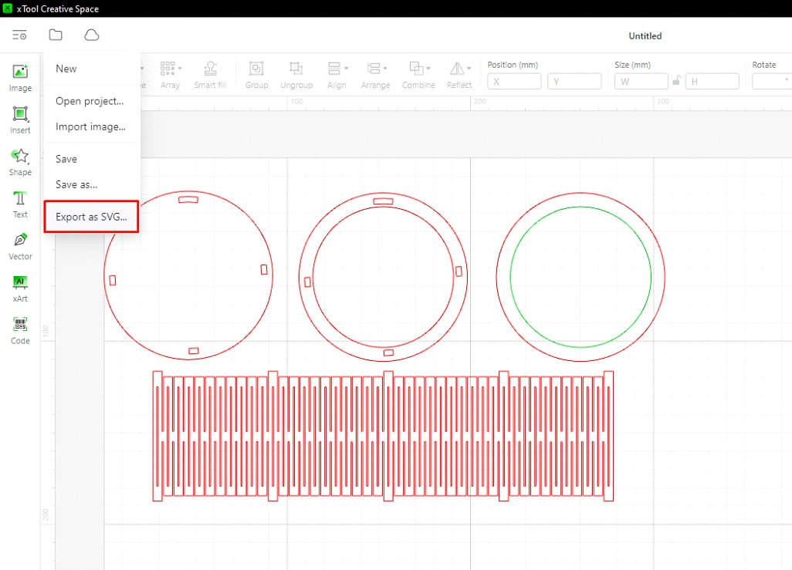

If the SVG file opens with incorrect dimensions in Lightburn, you need to select 72 DPI Illustrator in the settings or try to open a PDF
If the DXF does not open correctly in RDWorks, you can resave the SVG in the Illustrator with the following settings AutoCAD 2000/LT2000 version Scale:1 Millimeters=1
If you are working with CorelDRAW use an EPS file, it will maintain the correct dimensions.
You can re-save the SVG file so that it opens with the correct dimensions in all programs using XTool Creative Space.
workspace